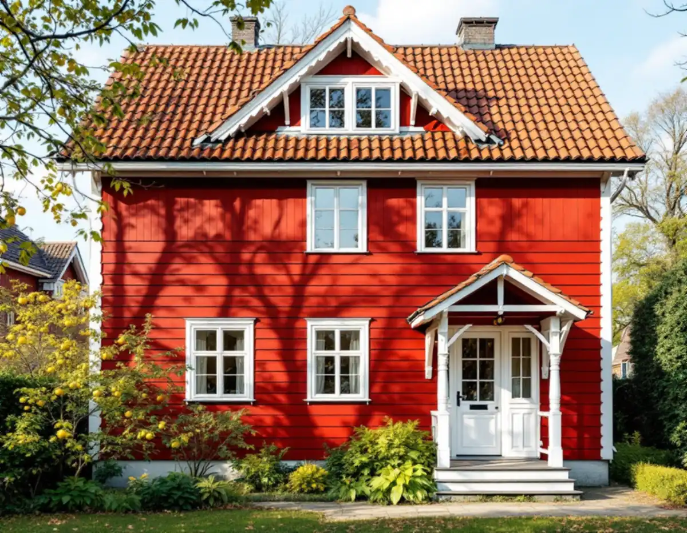
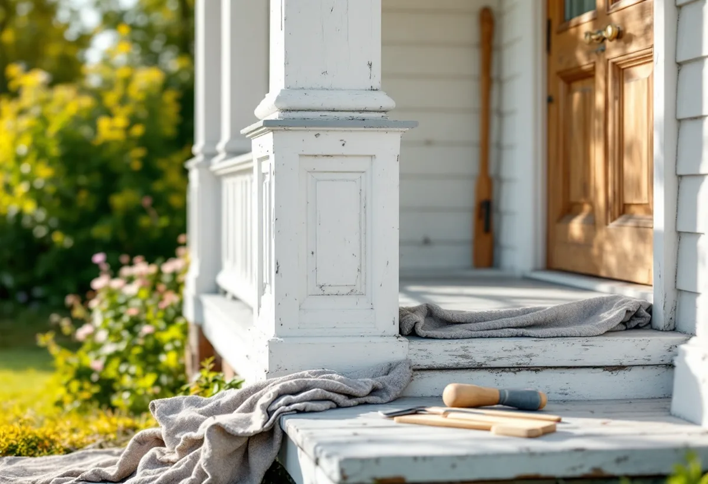

Platsbesök
Vi tittar på veranda, dörrar, fönster och tomt och noterar profiler, panel och mått.

I Gamla Enskede har många villor en veranda vid entrén, och trädgårdarna mellan husen är en del av helheten.
Beskriv jobbet kort.
Något blev fel. Kontrollera uppgifterna eller ring 08 12 410 276.
Vi tittar på jobbet på plats innan du får offert.
Du ser vad som ingår och vad det kostar.
Vi drar av ROT direkt och sköter ansökan.
Geal Entreprenad AB, Bromma. Org.nr 559303-7566.

Det påverkar både hur snickerierna lagas och var en ny altan eller bod kan stå. Geal Entreprenad AB arbetar med verandor, dörrar, altaner, förråd och inredningssnickeri i Gamla Enskede, Enskededalen och Enskede gård, med gratis platsbesök och skriftligt kostnadsförslag.
Stockholms stads vägledning Varsam utveckling av småhus- och villaområden beskriver Gamla Enskede som stadens första trädgårdsstad. Villorna byggdes i nationalromantisk stil, och brant takfall, liggande panel och en veranda vid entrén är vanligt. Typritningar togs fram för ett enhetligt uttryck, och den mest kända är den så kallade Enskedestugan.
Vägledningen räknar ursprungliga byggnadsdetaljer som fönster, entrédörrar och räcken till trädgårdsstadens karaktärsdrag. Fönstren sitter grunt i fasaden, är oftast två- eller treluftsfönster med stående proportioner och har i många fall småspröjsade rutor ovanför tvärposten. Rådet är att ta tillvara eller återskapa karaktärsskapande material, byggnadsdelar och detaljer så långt det går.
För en snickare betyder det att en rötskadad verandastolpe, ett trappsteg eller en räckesdetalj i första hand lagas eller kopieras i samma profil. Ska en dörr eller ett fönster bytas listar staden ändringar som kan kräva bygglov: nytt material eller ny kulör, ändrad storlek, ändrade profiler på karmar, bågar och spröjsar, annan upphängning eller ny indelning.
Gamla Enskede är, tillsammans med Ålstensgatan och Södra Ängby, utpekat som riksintresse för kulturmiljövården, enligt stadens vägledning. Stadsmuseets klassificeringskarta visar riksintressena med en blå ring, och staden skriver att du behöver söka bygglov för åtgärder som annars kan vara bygglovsbefriade om fastigheten ligger inom ett sådant område.
Det gäller också det som byggs i trädgården. Stadens sida om lovfria komplementbyggnader påpekar att den utökade lovplikten gäller alla typer av komplementbyggnader, även sådana som tidigare kallades friggebod. På samma sätt kan en mur, ett plank eller en altan som är lovfri i andra stadsdelar kräva lov här.
Utanför riksintresset avgör kartans färger och detaljplanen, och Stadsmuseet kan ge besked om enskilda fastigheter. Vi tar gärna fram måttsatta skisser som du kan bifoga en ansökan.
Vägledningen beskriver trädgårdsstädernas öppna kvarter med vyer över trädgårdarna som ett viktigt karaktärsdrag. Tillbyggnader, takkupor, terrasser och andra mer påtagliga förändringar ska i första hand göras mot trädgårdssidan, och tillbyggnader mot gatan bör undvikas.
Där ingen utökad lovplikt gäller krävs bygglov för en altan, en mur eller ett plank som är högre än 1,8 meter inom 3,6 meter från en byggnad, eller högre än 1,2 meter längre bort. Bygger du ett plank ovanpå altanen avgör den sammanlagda höjden, medan ett lovbefriat räcke inte räknas in. Får altanen tak eller väggar kan den i stället bli en tillbyggnad.
Staden anger att när förutsättningarna för lovbefrielse inte är uppfyllda krävs bygglov för en mur eller altan som är högre än 0,5 meter och för ett plank högre än 1,1 meter, och att även lägre konstruktioner kan kräva lov om de bedöms påverka områdets karaktär. Läs mer om altaner och trall på sidan om snickare.
I Enskededalen blev 1920-talets klassiska formspråk rådande, enligt vägledningen. Husen är enkla volymer i ett och ett halvt plan med symmetriska fasader, stående träpanel med tunn lockläkt och små takkupor mitt på långsidorna. Färgskalan gick i ljusa dämpade toner av grönt, gult eller grått.
Vägledningen nämner att garage, carportar och förråd har byggts på tomterna i trädgårdsstäderna, och att det i Enskede gård också har skett förtätning inom den ursprungliga strukturen. Rådet är att utgå från de ursprungliga husens volym, proportioner och takform, även när det gäller komplementbyggnader.
Vid platsbesöket tittar vi därför på panelens dimension och lockläktens bredd, så att en ny bod eller en lagad vägg passar huset. Ska taket ses över samtidigt finns mer under takrenovering i Enskede, och för större utbyggnader under tillbyggnad i Enskede.
Vi tittar på veranda, dörrar, fönster och tomt och noterar profiler, panel och mått.
Fastigheten kontrolleras i Stadsmuseets klassificeringskarta och i detaljplanen.
Lagning, kopiering av detaljer och nya delar redovisas var för sig.
Där lov behövs tar vi fram måttsatta skisser som du kan bifoga ansökan.
Det som kan lagas lagas, och nya delar tillverkas i samma profil som originalet.
Vi går igenom arbetet tillsammans innan vi lämnar platsen.
För en villa ger Skatteverket rotavdrag för att reparera och underhålla entrétrappor, balkonger och altaner med räcken, för att byta och reparera dörrar och för att bygga en altan som byggs ihop med huset. Att bygga ett nytt fristående förråd eller garage ger inget avdrag, och inte heller att bygga staket.
Om material byts ska det nya vara likvärdigt med det gamla. Avdraget är 30 procent av arbetskostnaden, högst 50 000 kr per person och år och högst 75 000 kr tillsammans med rutavdrag. Material och resor ingår inte, och Geal drar avdraget direkt på fakturan.
Hur mycket av verandan eller entrén som kan sparas avgör mest: en lagning går fortare än en kopia av en svarvad stolpe eller en profilerad list. För en altan eller bod väger storlek, grund och eventuella lovhandlingar tyngst. Platsbesöket är gratis och du får ett skriftligt kostnadsförslag.
Altan, väggar, dörrar och inredning.
Snickare i Stockholm →Takbyte, takbesiktning och plåtarbeten.
Takläggare i Enskede →Trädgårdsstad med lertegel.
Takrenovering i Enskede →Trädgårdsstaden, kartan och lovet.
Attefallshus i Enskede →Typhus i trä, träbjälklag och bostadsrätt.
Badrumsrenovering i Enskede →Byggplatsen, gatan och träden.
Byggföretag i Enskede →Trädgårdsstadens kulörer.
Fasadmålning i Enskede →Trähus, putsade typhus och småstugor i Enskede.
Fasadrenovering i Enskede →Fönster i riksintresset.
Fönsterbyte i Enskede →Trädgårdsstadens fönster.
Fönsterrenovering i Enskede →Lut, såpa och olja på fur och gran.
Golvläggare i Enskede →Slipa fram gamla brädgolv i villan.
Golvslipning i Enskede →Typhus, dubbelhus och småstugor.
Köksrenovering i Enskede →Trädgårdsstad, egnahem och småstugor i Enskede.
Målare i Enskede →Snörasskydd, rännor och verandaplåt i Enskede.
Plåtslagare i Enskede →Takfallet, höjden och riksintresset.
Takbyte i Enskede →Tapet i vindsrum och snedtak.
Tapetsering i Enskede →Små tomter och riksintresse.
Tillbyggnad i Enskede →Renovera innan ni flyttar in.
Totalrenovering i Enskede →Eller ring 08 12 410 276, mån–fre 08–17.
Beskriv jobbet kort.
Något blev fel. Kontrollera uppgifterna eller ring 08 12 410 276.